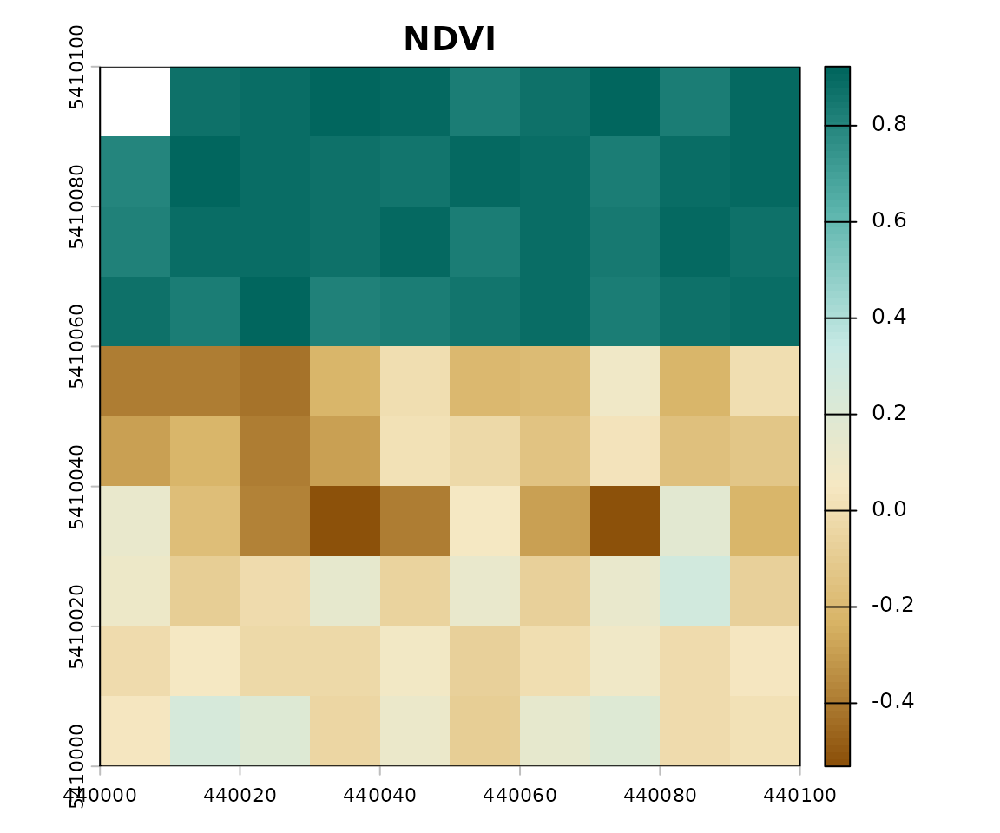

End-to-End Multispectral Image Workflow
Source:vignettes/multispectral-workflow.Rmd
multispectral-workflow.RmdIntroduction
This vignette demonstrates a complete workflow for processing
multispectral satellite imagery using GeoIndexR and
terra:
- Loading imagery
- Identifying bands and mapping sensor aliases
- Calculating targeted and comprehensive indices
- Validating and summarizing distributions
- Visualizing results with thematic color maps
- Exporting georeferenced GeoTIFF files
Step 1: Loading Imagery & Inspecting Bands
library(GeoIndexR)
library(terra)
#> terra 1.9.50
# Load synthetic 6-band multispectral raster
img <- get_example_data()
print(img)
#> class : SpatRaster
#> size : 10, 10, 6 (nrow, ncol, nlyr)
#> resolution : 10, 10 (x, y)
#> extent : 440000, 440100, 5410000, 5410100 (xmin, xmax, ymin, ymax)
#> coord. ref. : WGS 84 / UTM zone 31N (EPSG:32631)
#> source(s) : memory
#> names : blue, green, red, nir, swir1, swir2
#> min values : 0.020222, 0.041241, 0.020295, 0.01032, 0.005001, 0.001065
#> max values : 0.197477, 0.239128, 0.348968, 0.848912, 0.546913, 0.446534
names(img)
#> [1] "blue" "green" "red" "nir" "swir1" "swir2"Step 2: Band Mapping & Sensor Presets
Satellite images often use sensor-specific band notations (such as
B02, B03, B04, B08
for Sentinel-2, or B2, B3, B4,
B5 for Landsat 8/9).
GeoIndexR supports sensor presets:
# View pre-configured Sentinel-2 bands
band_mapping("sentinel2")
#> coastal blue green red rededge1 rededge2 rededge3
#> "B01" "B02" "B03" "B04" "B05" "B06" "B07"
#> nir nir2 rededge4 watervapor cirrus swir1 swir2
#> "B08" "B8A" "B8A" "B09" "B10" "B11" "B12"
#> swir
#> "B11"
# View pre-configured Landsat 8/9 bands
band_mapping("landsat8")
#> coastal blue green red nir swir1 swir2 pan
#> "B1" "B2" "B3" "B4" "B5" "B6" "B7" "B8"
#> cirrus thermal1 thermal2 thermal swir
#> "B9" "B10" "B11" "B10" "B6"If your image layers use non-standard names, you can pass a custom named vector:
my_mapping <- c(
blue = "blue",
green = "green",
red = "red",
nir = "nir",
swir = "swir1"
)Step 3: Computing Multiple Indices
Compute a multi-index suite covering vegetation, water, urban built-up, and soil:
indices <- geo_indices(
image = img,
indices = c("NDVI", "NDWI", "NDBI", "SAVI", "BSI"),
bands = my_mapping
)
print(indices)
#> class : SpatRaster
#> size : 10, 10, 5 (nrow, ncol, nlyr)
#> resolution : 10, 10 (x, y)
#> extent : 440000, 440100, 5410000, 5410100 (xmin, xmax, ymin, ymax)
#> coord. ref. : WGS 84 / UTM zone 31N (EPSG:32631)
#> source(s) : memory
#> names : NDVI, NDWI, NDBI, SAVI, BSI
#> min values : -0.531245, -0.848904, -0.685295, -0.073625, -0.618145
#> max values : 0.922703, 0.76591, 0.355796, 0.863291, 0.331981
names(indices)
#> [1] "NDVI" "NDWI" "NDBI" "SAVI" "BSI"Step 4: Summary Statistics
Use index_summary() to inspect the distributions across
all computed layers:
stats <- index_summary(indices)
print(stats)
#>
#> === GeoIndexR Spectral Summary ===
#>
#> index min max mean median sd q05 q25 q75 q95
#> NDVI -0.5312 0.9227 0.2984 0.1108 0.4873 -0.3934 -0.0779 0.8676 0.8994
#> NDWI -0.8489 0.7659 -0.2182 -0.2310 0.5295 -0.8222 -0.7401 0.3716 0.5998
#> NDBI -0.6853 0.3558 -0.2397 -0.3410 0.3298 -0.6174 -0.5173 0.1321 0.2609
#> SAVI -0.0736 0.8633 0.3063 0.0676 0.3819 -0.0638 -0.0241 0.7355 0.8459
#> BSI -0.6181 0.3320 -0.2388 -0.4038 0.3221 -0.5783 -0.4689 0.1837 0.3023
#> na_pct total_cells
#> 1 100
#> 1 100
#> 1 100
#> 1 100
#> 1 100Step 5: Visualization
plot_index() applies scientifically tailored palettes
based on index categories:
# Visualizing NDVI
plot_index(indices, index = "NDVI")
Step 6: Exporting with terra::writeRaster
Since all outputs returned by GeoIndexR are standard
terra::SpatRaster objects with full CRS and geotransform
preservation, saving results to GeoTIFF or COG is simple:
# Export the multilayer raster to GeoTIFF
terra::writeRaster(indices, "computed_indices.tif", overwrite = TRUE)This ensures complete compatibility with GDAL, QGIS, ArcGIS, Python rasterio, and web mapping services.